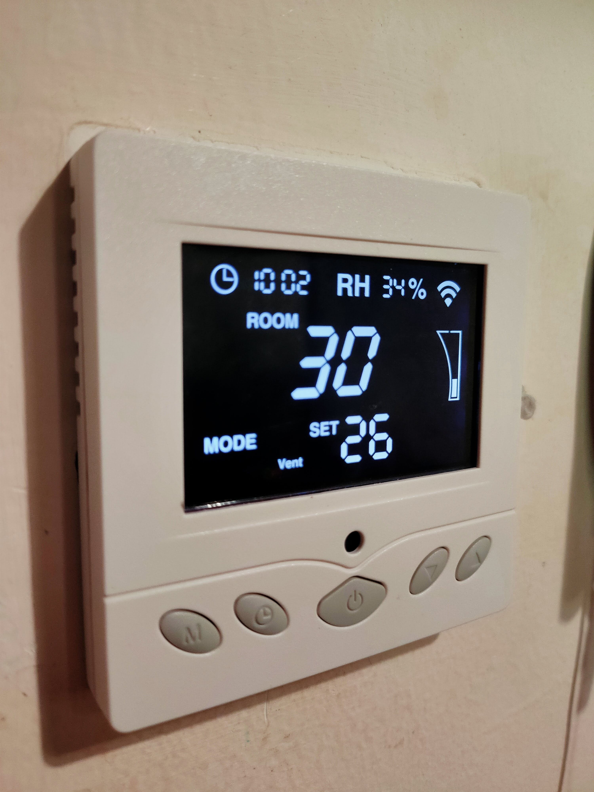
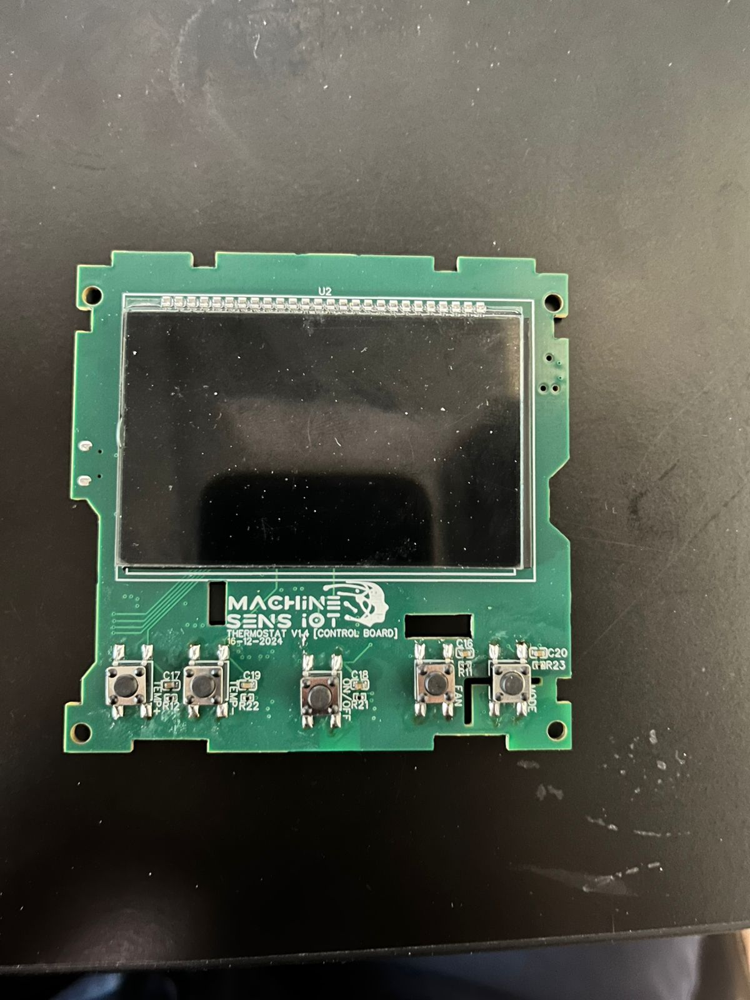
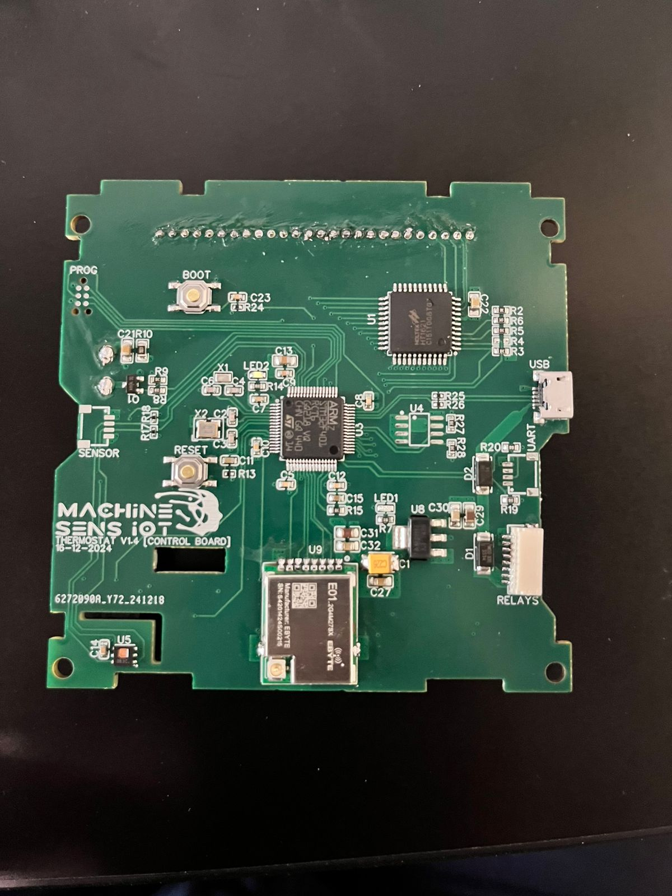

Problem
Conventional FAHU thermostats often required manual operation or costly wired integration with a central control room, especially when retrofitting existing buildings.
A custom smart thermostat designed for Fresh Air Handling Unit automation in commercial and industrial buildings. The system replaced conventional manually controlled thermostats and expensive wired control-room connections with a wireless thermostat network supporting local control, centralized cloud scheduling, and 2.4 GHz wireless communication.

Fresh Air Handling Units are commonly used in commercial and industrial buildings to manage fresh air supply and indoor environmental conditions. In many installations, thermostats are either manually controlled locally or connected to the main control room through wired RS485 networks. For buildings that are already constructed, adding RS485 wiring can be expensive and labor-intensive because ducts, cable routes, and installation work are required throughout the building.
Conventional FAHU thermostats often required manual operation or costly wired integration with a central control room, especially when retrofitting existing buildings.
A wireless smart thermostat was developed to replace conventional thermostats and connect to a central system using 2.4 GHz wireless communication instead of new RS485 cabling.
The thermostat supported both local manual control using onboard buttons and centralized scheduling and control through a cloud platform using MQTT communication.
The thermostat hardware was designed from scratch and manufactured through JLCPCB. The design integrated control, wireless communication, display interface, sensing, and user input into a compact thermostat form factor suitable for building automation use.
The hardware was designed to fit the role of a practical wall-mounted thermostat while supporting both local interaction and wireless building-level automation. The custom display and onboard buttons allowed users to operate the thermostat manually, while the wireless subsystem enabled central monitoring and control without installing new communication wires.
The software was designed for buildings with many thermostats installed across different rooms or zones. Instead of each thermostat requiring a direct wired connection to the control room, the thermostats formed a wireless mesh network with one or more master nodes that relayed data between the thermostat network and the cloud platform.
This project was completed as professional work at MachinesensIoT. My role covered the full hardware and software design of the thermostat system, from concept to manufactured PCB and functional embedded software.
Designed the thermostat hardware from scratch, including STM32F401 integration, NRF24 wireless communication, display interface, sensing, buttons, and PCB design for manufacturing.
Developed the embedded software architecture for local thermostat control, sensor reading, display operation, wireless communication, and central command handling.
Designed the communication approach for buildings with many thermostat nodes, including mesh-style wireless communication and master-node message relaying.
Integrated the thermostat network concept with cloud-side control through MQTT, enabling centralized scheduling and remote FAHU automation.
Add the two PCB photos, the enclosed thermostat photo, and the operation video here. These media files are useful because they show that the project moved beyond concept into actual hardware manufacturing and functional testing.


The thermostat reduced the need for expensive post-construction RS485 wiring by using 2.4 GHz wireless communication for building-level control.
Multiple thermostats could operate as part of a wireless building network, with master nodes relaying messages between devices and the cloud platform.
The thermostat supported both local button-based control and centralized cloud-based scheduling and control, making it practical for real building operation.
This project involved the complete hardware and software design of a smart wireless thermostat for industrial Fresh Air Handling Unit automation. The system was developed to solve a common building automation problem: conventional thermostats are often manually controlled, and connecting them to a main control room through RS485 wiring can be expensive and difficult in already constructed buildings because new ducts, cable routing, and installation work are required.
The solution was a wireless thermostat that could replace a conventional thermostat while communicating with the central control system through a 2.4 GHz wireless network. The hardware was built around an STM32F401 microcontroller, NRF24 wireless communication module, custom display and display controller, onboard buttons, and a temperature and humidity sensor. The PCB and hardware were designed from scratch and manufactured through JLCPCB, with a custom display manufactured in China.
The software was designed for buildings containing many thermostat nodes. The thermostats formed a mesh-style wireless network with one or more master nodes that relayed messages between the thermostats and the cloud platform. MQTT was used for cloud communication, enabling centralized scheduling and remote FAHU control while still allowing manual operation directly from the thermostat. The project demonstrates industrial IoT product development, embedded hardware design, wireless communication, cloud-connected control, and practical building automation system design.